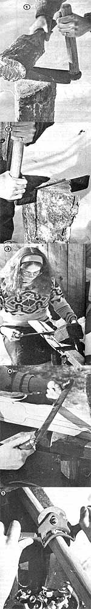

Breaking the handle off a brand-new tool-especially if the piece of equipment is one you just shelled out hard-earned cash for-can be an irritating experience. Sadly enough, the old plaint, "They just don't make 'em like they useta," applies to wooden products at least as well as-if not better than-it does to the bulk of today's mass-produced plastic and metal contraptions. It seems as if the subtleties of wood grain, texture, resiliency, and pliancy are well beyond the capabilities of "modern" mechanized manufacturing. It's no wonder, then, that quite a few folks are taking a couple of steps backward in time and learnin' to "whittle" out their own wooden tools and utensils. I, for one, have found that-whether I make a spatula or an axe handle-not only do I assure myself of top-notch quality by "doin' it myself", but I can save (or even earn) a few dollars while I'm at it. As a matter of fact, though I started shavin' just for the fun of it, my hobby ended up turning into a part-time profession. Yours could, too!
Now just because the wood-shaving craft goes back a ways, don't think it's some ancient art form shrouded in mystery. As you'll find out, this large-scale form of whittlin' is no more than the next logical step beyond timber chopping! With a little woodsy know-how, and a few basic tools, you'll be turning out "sculpture" in no time at all.
WOOD CHOICE The first and most important rule of thumb in selecting your shavin' wood is to choose freshly cut green specimens. Such sappy wood is far easier to slice than the dried variety, and doesn't tend to crack in the wrong direction. ( Stay away from lumberyards! Commercial lumber is almost always dried, frequently in a kiln, and may not have been sawed with the grain of the wood.)
Of course, the best (and least expensive) dray to get your timber is to choose and chop it yourself. Such "foraged" lumber might come from your own woodlot or from the castoffs of power or telephone line clearing crews. But wherever you get your raw materials, be sure to pick a tree that's suited to the task you've assigned it: Don't whack down a 20"-diameter walnut to make an axe handle when a 7-8" hickory will probably (if the tree is straight enough and long enough) do the job.
The type of wood you select will depend largely upon what's growin' in your neck of the woods. You might consider using white oak for utensils and tools (since it's easy to work with and resistant to rot), and hickory for handles (because it combines strength and hardness without being brittle) ... if such species are readily available to you.
TOOLS
Your shopping list for shavin' implements will be limited to (beyond the backcountry essentials of an axe, wedge, and sledge) a froe, a froe mallet, a drawknife, and a spokeshave. A froe is a cleaving knife with a 12-15" cutting edge and a handle that protrudes-from the back of the blade-at a right angle. Its companion, the froe mallet, is formed from the heart of any one of a number of different hardwoods, and is used to "plant" the froe in the grain of the wood.
Once you've used the froe to cleave your wood into an appropriately sized block, you'll need a drawknife in order to do the shaping. The drawshave (as the tool is sometimes called) also has a 15" blade, usually gently curved, with handles set at the perpendicular . . . one to each end of the blade.
When the drawknife has done its job, you can finish shaping your wooden object with a spokeshave. Such smaller carvers come in a variety of cutting shapes (from straight to half-round), and employ, an adjustable blade depth (much like the! feature found on a safety razor).
But before you take this list and head for your local hardware store, be forewarned: The salesperson will probably give you a blank look. Like so many of the tools (and skills) that helped to shape this country, wood-shaving implements have been relegated to the dusty walls of old woodsheds. You'll have to patrol auctions, flea markets, and/or antique shops (or write away for a catalog from one of the companies listed at the end of this article) to equip yourself.
SHAVIN '
PHOTO 1:Once you've selected your hunk of wood-and made the initial (major) splits with a wedge or maul-the froe and froe mallet will help you to cleave the crude piece closer to the size you need. (One small froe splitting trick I've learned is to place a small indentation where you want the cut. That way the froe is less likely to bounce out when you belt it with the mallet.)
PHOTO 2: Tap your froe into the end of the log until its upper edge is even with the wood's surface. Then twist the handle toward (or away from) you. When the wood separates, simply move the f roe down the crack and twist it again.
PHOTO 3: Once you've reduced your rough-hewn material to approximate size, firmly clamp the wood either in a shaving horse (as shown in the photo), a wood vise, a metal vise (lined with scrap lumber to protect your creation) . . . or any similar clasping contrivance you can dream up. Then begin working the slab down with a drawknife. When using this particular tool, move it diagonally-as you pull it toward you-to help peel away smooth layers.
PHOTO 4: When your progress with the drawknife takes your creation close to a recognizable form, it's a good idea to mark the shape of the future tool on the surface so you'll have a pattern to conform to. Later-when you've achieved an artist's freehand confidence-you can allow your whim to determine form.
PHOTO 5: Do the final smoothing and contouring of curves with your spokeshave (easy does it . . . don't try to take off all the wood with one pass). In this picture you see an arced, single-adjustments-crew tool in use, but for other applications you may find that a half-round or a straight spokeshave works better. (If your budget limits you to one of these "trimmers", I recommend a straight edge. The flat blade will do most any job that one of the other shapes can accomplish, although some chores will require a little more effort.) Whichever blade shape you choose, remember that a spokeshave will work well only if you keep the edge sharp and evenly adjusted to the cut depth necessary to smooth out your working surface.
When you've finished your practical sculpture, you're bound to feel a greater sense of accomplishment than if you'd bought the item. Furthermore, because you bothered to work with the wood and embellish its finer points, your handwrought equipment will last a darn sight longer than would its store-bought equivalent. And the effort you put into the device will give you a whole new respect for your wooden utensils and tools . . . I'm willing to bet you're going to take good care ol 'em!
TOOLS FOR THE TASK
If you have difficulty locating the implements mentioned in this article, you can send $1.00 to one of the following companies for a catalog: [1] Woodcraft Supply, Dept. TMEN, 313 Montrale Avenue, Woburn, Maine 01801 . . . [2] Silvo Hardware, Dept. TMEN, 107-109 Walnut Street, Philadelphia, Pennsylvania 19016 . . . [3] Leichtung, Inc., Dept. TMEN, 4944 Commerce Parkway, Cleveland, Ohio 44128.
SOURCES ON SHAVIN'
After finishing a couple of woodshaving projects, you just might find yourself interested in learning more about woodcraft. I've read all of the following books and found them not only enjoyable, but nearly indispensable.
A Reverence for Wood and Museum of Early American Tools, both by Eric Sloane (Ballantine, paperback, $2.95 each).
CountryFurniture by Allan A. Watson (New American Library, paperback, $4.95).
Country Woodcraft by Drew Langsner (Rodale Press, paperback, $9.95).
Foxfire 1-4 edited by Eliot Wigginton (Anchor Books, paperback, $5.95 each).
EDITOR'S NOTE: Eric Sloane's books (A Reverence for Wood and Museum of Early American Tools) and all the Foxfire volumes are available-for the listed prices plus 95 cents shipping and handling (three or more books, $2.00)-from Mother's Bookshelf, P.O. Box 70, Hendersonville, North Carolina 28791.
|
 |
|
|